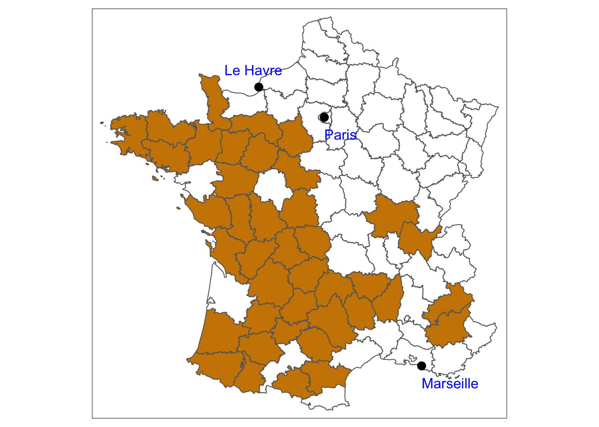
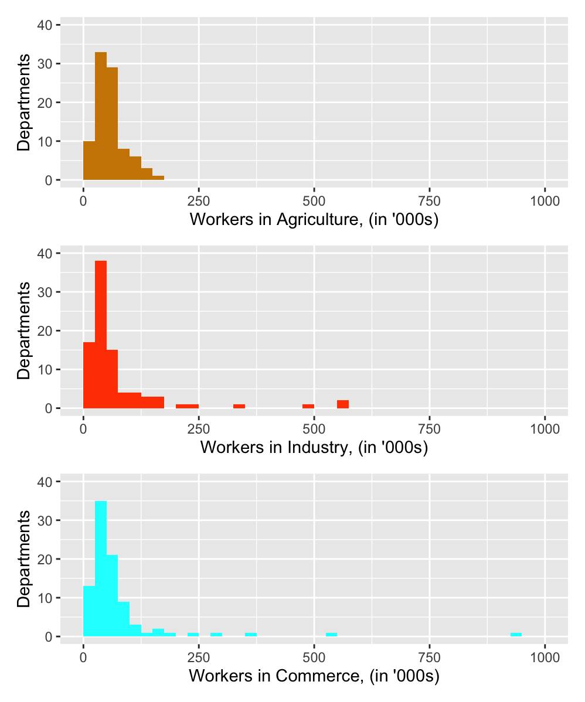
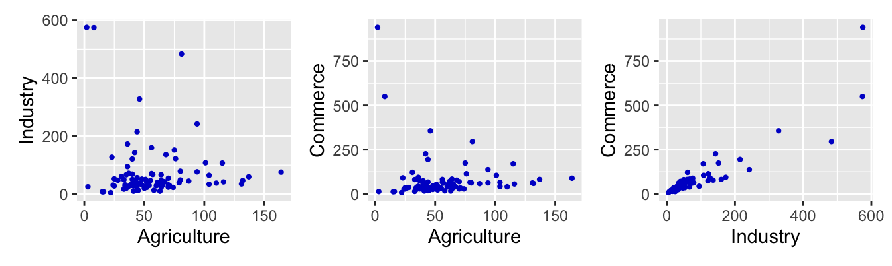
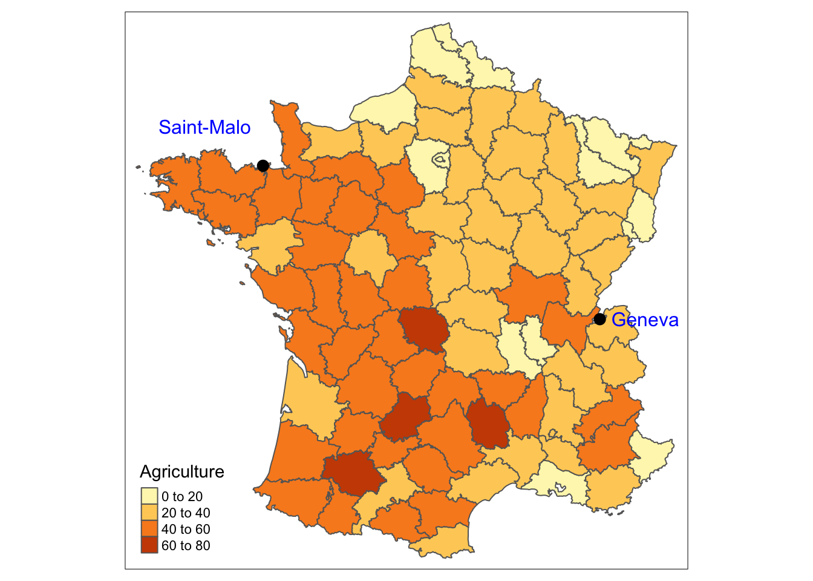
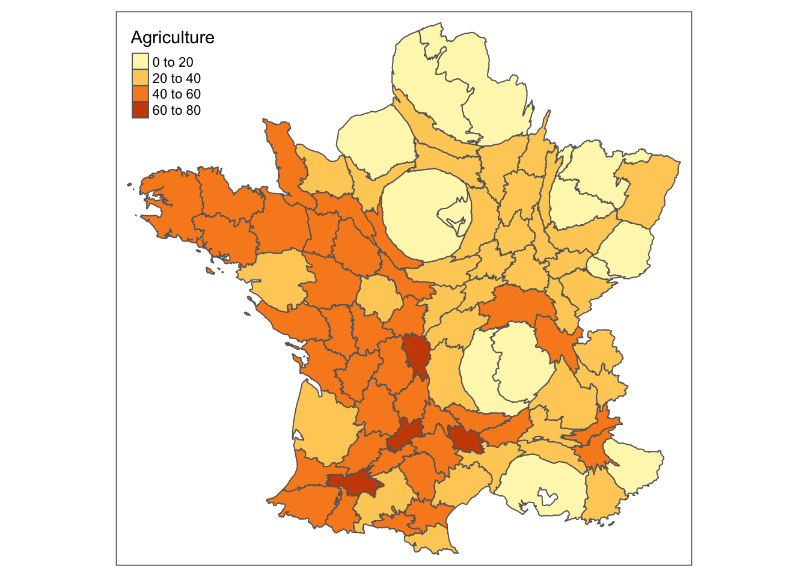
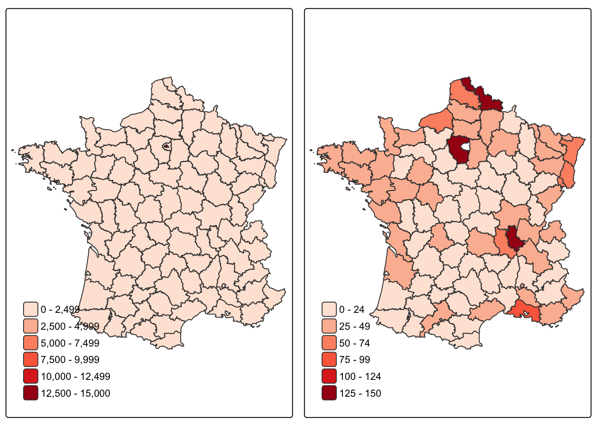
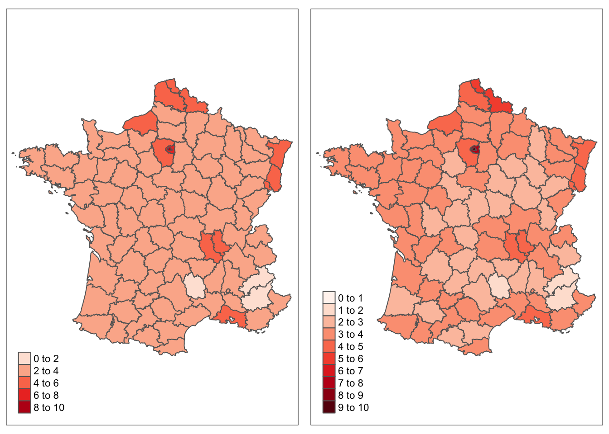

7 Re-viewing Bertin’s main example
“How can you govern a country which has two hundred and forty-six varieties of cheese?”
Background The famous Semiology of Graphics book (Bertin (2010)) includes analysis of a dataset on the structure of the French workforce by administrative region (département) in \(1954\).
Questions How were the workers distributed across the departments? Which sector of the workforce employed the most? Were there geographic patterns?
Sources The table in Bertin’s book for the data, areas of the departments from the Guerry package and Wikipedia, and the Institut Géographique National for the map.
Structure Numbers of workers in three sectors for each of the then 89 departments of France and Paris.
7.1 Bertin’s classic book
The book Semiology of Graphics (Bertin (2010)) is deservedly a classic amongst texts on statistical graphics. Wainer has written that “For technical details [it] is without peer” (Wainer (1997)) and that it “laid the groundwork for modern research in graphics” (Wainer (2004)). Lee Wilkinson has stated (Wilkinson (2005)) : “It has taken me ten years of programming graphics to understand and appreciate the details in Bertin.” Bertin’s work is important because he wrote about general principles for drawing graphics and introduced theoretical structure.
The book includes a whole chapter of \(39\) pages devoted to the workforce dataset (Part One Chapter III A). As a section heading on its first page says, “A hundred different graphics for the same information”. Most of the data are printed out at the beginning of the chapter: the numbers of people working in the three sectors of Agriculture, Industry, and Commerce in each department, given in thousands. An original source for the data is not given and there are no details on how the sectors were defined. There are minor inconsistencies in the totals, some, but not all, doubtless due to rounding. Paris is included as a separate entity and Corsica is excluded.
Bertin also draws graphics for numbers of workers per square kilometre, based on the areas of the departments. To calculate these here, most department areas were taken from a dataset of France in the 1830s provided in the package Guerry. For the few newer French departments the data were taken from Wikipedia.
A shapefile map of the current French departments is available on the website of the Institut Géographique National. Details are given in a French article on cartography with (Coulmont (2010)). The map does not have the five overseas departments, which are not relevant for Bertin’s dataset, but it does include the two Corsican departments and the six new departments created in \(1967\) by splitting up Seine and Seine-et-Oise. To adjust for \(1954\), the year of Bertin’s data, the map was amended accordingly.
Dedicated Geographic Information System (GIS) software includes ways of dealing with enclaves, parts of one area completely enclosed by another. This was not expected to be an issue, but surprisingly it turned out that five departments have enclaves, amongst them, most notably, the Enclaves des Papes in Drôme, which is actually part of the department of Vaucluse. Discovering such tidbits of information is one of the serendipitous pleasures of Exploratory Data Analysis: you end up learning more than just about the data to hand.
7.1.1 A first map: agricultural workers
Code
data(F1954)
data(France54Map)
F1954 <- F1954 %>% mutate(Total=I.Agriculture + II.Industry + III.Commerce, AgPerc=100*I.Agriculture/Total, IndPerc=100*II.Industry/Total, CommPerc=100*III.Commerce/Total)
F1954 <- F1954 %>% mutate(TotDens=1000*Total/Area)
F1954 <- F1954 %>% mutate(AgDens=1000*I.Agriculture/Area, IndDens=1000*II.Industry/Area, CommDens=1000*III.Commerce/Area)
zx <- right_join(F1954, France54Map)
zx <- st_sf(data.frame(zx))
zx <- zx %>% mutate(Ag40=(AgPerc>=40))
cities <- data.frame(name = c("Marseille", "Le Havre", "Paris"))
tt1 <- cities %>% geocode(city = name, method = "osm") %>% st_as_sf(coords = c("long", "lat"))
tt1_geo <- st_set_crs(tt1, 4326)
bertX <- tm_shape(zx) + tm_polygons(col="Ag40", palette=c("white", "orange3"), legend.show=FALSE) + tm_shape(tt1_geo) + tm_dots(size=0.4) + tm_text("name", just="left", col="blue", xmod=c(0, -2), ymod=c(-1, 1))
bertX
Figure 7.1: Departments in France in 1954 where agricultural workers made up at least 40% of the workforce.
Figure 7.1 shows the \(90\) departments of France in 1954 with the 40 highlighted in which agricultural workers made up at least \(40\%\) of the workforce. There is a fairly clear division into East and West, something that is described in French texts under the heading of the Le Havre-Marseille line. The line may have declined in importance over the last thirty years, but in 1954 it was still relevant.
Given the large number of maps that Bertin included, you would expect several geographic patterns to be identified and discussed, yet none are. It is a puzzling omission.
7.2 Bertin’s many graphics of the French workforce data
There are just over \(100\) graphics in the chapter, all giving views of the same dataset. The exact number depends on how sets of multiple graphics and intermediate graphics illustrating how graphics were constructed are counted. About two-thirds of the graphics are maps of France, the rest are barcharts, scatterplots, histograms, and other graphic forms. Many of the graphics are drawn to show that they do not work well, as these remarks in the book show:
- In no case does the image yield useful information. [Referring to Figures 1, 2, and 3] (p. 103)
- It is difficult to draw a useful conclusion from this group of images. (p. 105)
- Note that the resemblances among the sectors are hardly visible and, in fact, are overwhelmed by the striking differences in total working population per department. (p. 121)
- In no case, however, can the notion of quantitative value be obtained from these images. (p. 124)
- This solution reduces considerably the information transmitted and opens the door to unjustifiable interpretations. (p. 126)
- Different value steps, applied to absolute quantities, result in completely erroneous images. (p. 130)
Comments in a similar vein can be found on pages 109, 119, 122, 131, and 135. The first edition of Bertin’s book was published in French in 1967. Perhaps he wanted to emphasise that not all of many different graphics are equally good. Judging by some of what is published today, this advice is still relevant.
Interestingly, the main (and pretty well only) conclusion that Bertin draws from all his graphics is that the data for two of the sectors are related. This conclusion is drawn by him from each of the groups of displays on pages 106, 107, 108, 109, 111, 112, 113, 115, 129, 135, and 137. He likes the final four maps on p. 137 best and writes: “The correlation between sectors II [Industry], III [Commerce] and the total population suggested by the earlier diagrams, is particularly striking here.” Bertin is referring to the total working population, the sum of the data for the three sectors. Since the two biggest sectors are highly positively correlated, it is obvious that the total will be positively correlated with them as well. Curiously this is not mentioned.
7.3 Viewing the data today
Bertin was a cartographer and geographer and was concerned with the individual values for the departments. The first eleven maps on p. 116-117 are maps of France for each of the four variables (the three sectors and totals) in terms of the absolute values, the densities per unit area, and the sector percentages, with the department boundaries marked and the values written in. Presenting individual department values is important, especially as French readers would want to know the value for their own department, but it does not show us how those individual values stand in relation to the distributions of all values. For instance, Gironde had \(115000\) working in Agriculture, \(107000\) working in Industry, and \(170000\) working in Commerce. It was 6th biggest in Agriculture with \(70\%\) of the highest value, 16th biggest in Industry with \(19\%\) of the highest value, and 8th biggest in Commerce with \(18\%\) of the highest value.
The sorted barcharts drawn by Bertin provide some distributional information in terms of rankings, although histograms are better for studying distributions and that is what statisticians would draw, as in Figure 7.2. The three plots have been drawn with common scales to make them directly comparable.
Code
a0 <- ggplot() + xlim(0,1000) + ylim(0,40) + ylab("Departments")
a1 <- a0 + geom_histogram(data=F1954, aes(I.Agriculture), breaks=seq(0,1000,25), fill="orange3") + xlab("Workers in Agriculture, (in '000s)")
b1 <- a0 + geom_histogram(data=F1954, aes(II.Industry), breaks=seq(0,1000,25), fill="orangered") + xlab("Workers in Industry, (in '000s)")
c1 <- a0 + geom_histogram(data=F1954, aes(III.Commerce), breaks=seq(0,1000,25), fill="cyan") + xlab("Workers in Commerce, (in '000s)")
a1/b1/c1
Figure 7.2: Histograms of the numbers working in the three sectors in 1954
The total numbers of workers in the three sectors are of the same order (Commerce 6.9 million, Industry 6.7 million, Agriculture 5.2 million). The distributions for both Industry and Commerce are highly skewed due to a handful of big values in both, primarily Paris and Seine. The distribution of agricultural workers is less skewed. No department has more than the 164000 agricultural workers of Finistère in the furthest North West of France.
Histograms of percentage shares of the sectors by department or of logged values of the sectors (to counteract the skewness) can provide some additional information, but scatterplots are more informative. Figure 7.3 shows scatterplots for the three pairs of sector variables. Each variable has been scaled individually. In particular, the agricultural numbers are much smaller than the numbers in the other sectors.
Code
a4 <- ggplot(F1954, aes(I.Agriculture, II.Industry)) + geom_point(colour="blue3", size=0.8) + xlab("Agriculture") + ylab("Industry")
b4 <- ggplot(F1954, aes(I.Agriculture, III.Commerce)) + geom_point(colour="blue3", size=0.8) + xlab("Agriculture") + ylab("Commerce")
c4 <- ggplot(F1954, aes(II.Industry, III.Commerce)) + geom_point(colour="blue3", size=0.8) + xlab("Industry") + ylab("Commerce")
a4 + b4 + c4
Figure 7.3: Pairwise scatterplots of the numbers in thousands working in the three sectors in France in 1954
Bertin’s conclusion that Industry and Commerce values are strongly related is immediately clear, as is the lack of relationship between Agriculture and the other two sectors. Identifying the highest values reveals that Paris has most workers in both Industry and Commerce and is out of line with the general Industry/Commerce relationship, having relatively more workers in Commerce. One department, Nord, manages to have a high value for Industry and a relatively high value for Agriculture.
There may be a little more information in the data alone, but what makes this dataset interesting is its geographic basis. That is surely why Bertin drew so many maps of the French workforce data.
7.4 Are there other geographic patterns?
There are a number of possible geographic patterns that might be found in mapped data, for example local clusters of related values, trends from North to South, similarities along coasts or borders. This means that any pattern identified should be treated with caution, as it is almost certain that something will be found. Nevertheless, geographic patterns discovered in the data may be useful in summarising information and in suggesting new ideas. It may be possible to find supporting evidence elsewhere, once it is known what should be looked for.
Code
zx <- zx %>% mutate(Agriculture=AgPerc)
cities2 <- data.frame(name = c("Saint-Malo", "Geneva"))
tt2 <- cities2 %>% geocode(city = name, method = "osm") %>% st_as_sf(coords = c("long", "lat"))
tt2_geo <- st_set_crs(tt2, 4326)
tm_shape(zx) + tm_polygons(col="Agriculture") + tm_shape(tt2_geo) + tm_dots(size=0.4) + tm_text("name", just="left", col="blue", xmod=c(-4.5, 0.5), ymod=c(1.7, 0))
Figure 7.4: Choropleth map of percentage of agricultural workers in France in 1954
In Friendly’s revisiting of Guerry’s work (Friendly (2007)), he refers to a line across France from Saint-Malo in the North-West to the Swiss border at Geneva in the South-East, which divided France into ‘France obscure’ (the uneducated South-West) and ‘France eclairee’ (the educated North-East). This is a famous line in French historical geography, first suggested by Dupin in 1828. Judging by the results of a recent Google query, it still attracts attention, although for different reasons. Looking at Figure 7.4, there seems to be some evidence for a similar geographic division in the 1950s.
Apparently, there is a further region called the Blue Banana, a European corridor of urbanisation, running from Northern Italy through Switzerland, Germany, the North Eastern departments of France, Belgium and Holland, finishing in a broad path across the South East and Midlands of England (Wikipedia (2020c)). That would imply lower levels of agricultural workers as in the plot.
As the areas with the highest workforces in and around Paris can barely be seen in the maps, a cartogram might be drawn. A cartogram redraws regions to match population size or another quantitative measure instead of geographic area. The regions are drawn to minimise distortion, but this is difficult, especially when regions of large area have small populations and vice versa. A number of algorithms have been proposed. Figure 7.5 has been drawn using a rubber sheet distortion algorithm and is based on the total working population for each department.

Figure 7.5: Cartogram of working population size shaded by the percentage of agricultural workers in France in 1954
The major industrial and commercial areas, where there is little agriculture, dominate the eastern half of the country. The Rhône and Loire departments almost touch the departments around Paris. Many different cartograms might be drawn, but they will all convey roughly the same message.
7.5 Density of the workforce by area
Bertin included four maps of the density of the workforce by area, thousands per square kilometre, on p.117 of his book. Every department has the relevant value written in, apart from Seine (covering Paris as well) for which the value is written at the top of each map, as the corresponding area is so small. He does not discuss what might be seen in the data although there are some unusual features. Choropleth maps for densities of the total working population, both including Paris and Seine and excluding them, are shown in Figure 7.6.
Code
tmT <- tm_shape(zx) + tm_polygons(col="TotDens", breaks=seq(0, 15000, 2500), palette="Reds") + tm_legend(legend.title.size=0.01)
zxPS <- zx %>% filter(!Dept %in% c("Seine", "Paris"))
tmPS <- tm_shape(zxPS) + tm_polygons(col="TotDens",breaks=seq(0, 150, 25), palette="Reds") + tm_legend(legend.title.size=0.01)
tmap_arrange(tmT, tmPS)
Figure 7.6: Maps of the density of the total working population in thousands per square kilometre in France in 1954, all departments (left), excluding Seine and Paris (right)
The values for Paris and Seine for total density are so high that no differences can be seen amongst the other departments in the first map. Looking closely it is just about possible to see that Paris is coloured dark red. The map on the right has a completely different scale (by a factor of 100) and shows that some of the departments with the otherwise highest densities were on the western edge of Seine. Despite the dramatic change in scale, many of the departments are still in the lowest grouping.
An alternative that avoids excluding departments is to use natural logarithms of population density. Figure 7.7 shows two versions, one using a default colour scale and one using a more detailed one. The first puts most of France in the same group, emphasising the three departments with lowest density in the South and Southeast and the few high density departments. The second suggests a difference in population density between the West and the Centre, apart from the departments with very high or low levels.
Code

Figure 7.7: Maps of the log of population density of the total working population in thousands per square kilometre in France in 1954, default scale (left), more detailed scale (right)
7.6 Comments on Bertin (with hindsight)
Bertin’s “Semiology of Graphics” contains many important ideas and was an attempt to develop a theory of graphics that could be built on and extended. Reviewing the dataset he considers in most detail does not reflect this. There are too many unsatisfactory graphics and there are few conclusions drawn from the data. The emphasis is more on presenting the available data in a broad range of different graphics than on deriving information from the data using graphics. Given the amount of work that was necessary to produce the graphics—some are beautifully drawn—this is disappointing. As Bertin himself says on p. 419 `Graphics has two objectives: 1. Data processing to understand the data and derive information from them. 2. Communication of this information.’
Bertin is worthy of serious study and applying his ideas to new datasets may be more effective than studying his examples. There are no reproductions of Bertin’s graphics here, hopefully encouraging readers to look at “Semiology of Graphics” for themselves.
Answers Each of the three sectors employed between 5 and 7 million. There were relatively more agricultural workers in the West of France. Numbers working in Industry and Commerce were positively related.
Further questions How have the numbers changed since 1954? Are there other sectors which have become important?